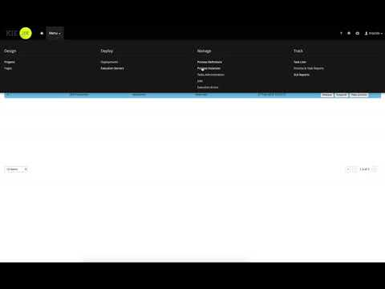

Track your processes and activities with SLA
One of the important parts of business automation is to be able to track the execution if it’s done on time. This is what usually is done by SLA (Service Level Agreement) fulfilment. jBPM as part of 7 series provides an SLA tracking mechanism that applies to:
- activities in your process (those that are state nodes)
- processes
- cases (next article will be dedicated to cases)
Even though users could already achieve that by using various constructs in the process (boundary timer events, event subprocesses with timer start event, etc) though that requires additional design work within the process and for some (basic) cases might make the diagram (process) less readable.
On the other hand, these constructs provide more control over what needs to be done so it is still a viable approach, especially when custom and complex logic needs to be carried out.
jBPM 7.7 introduces SLA tracking based on due date that can be set either for entire process instance or selected activities.
What this means is that process engine will keep track if the process instance or activity is completed before it’s SLA. Whenever SLA due date is set, process/node instance will be annotated with additional information:
- calculated due date (from the expression given at design time)
- SLA compliance level
- N/A – when there is no SLA due date (integer value 0)
- Pending – when instance is active with due date set (integer value 1)
- Met – when instance was completed before SLA due date (integer value 2)
- Violated – when instance was not completed/aborted before SLA due date (integer value 3)
- Aborted – when instance was aborted before SLA due date (integer value 4)
As soon as process instance is started it will be labeled with proper information directly in workbench UI. That allows to spot directly issues with SLA violations and react accordingly.
Moreover, to improve visibility a custom dashboard can be created to nicely aggregate information about SLA fulfilment to be able to easily share and control that area. Workbench is now equipped with so called Pages (part of design section, next to projects) where you can easily build custom dashboards and include them in the workbench application.
But SLA tracking in jBPM is not only about showing that information or building charts on top of that. This is what comes out of the box but is not limited to it.
SLA tracking is backed by ProcessEventListener that exposes two additional methods:
- public void beforeSLAViolated(SLAViolatedEvent event)
- public void afterSLAViolated(SLAViolatedEvent event)
These methods are invoked directly when SLA violation was found. With this users can build custom logic to deal with SLA violations, to name few:
- notify an administrator
- spin another process to deal with violations
- signal another part of the process instance
- retrigger given node instance that is having issues with completion
There might be almost endless ways of dealing with SLA violations and that’s why jBPM gives the option to deal with then in the way you like rather than enforcing you to follow certain ways. Even notifications might be not so generic that everyone would apply the same way.
By default, each SLA due date with be tracked by dedicated timer instance that will fire off when due date is reached. That in turn will signal process instance to deal with the SLA violation logic and call event listeners. Default operations are:
- update SLA compliance level – to Violated
- ensure that *Log tables will be updated with the SLA compliance level
In some cases, especially when there is a huge volume of process instances with SLA tracking, individual timers might become a bottleneck in processing (though this would be really for very heavy loads firing at pretty much same time). To overcome this users can turn off timer based tracking and rely on external monitoring. As an alternative, jBPM provides executor command that can be scheduled to keep track of SLA violations. What it does is:
- periodically checks ProcessInstanceLog and NodeInstanceLog to see if there are any instances with SLA violated (not completed in time)
- for anything found, it signals given process instance telling that SLA violation was found
- process instance then will do exactly same logic as when it’s triggered by timer
External tracking of SLAs most likely won’t be as accurate (when it comes to time it signals SLA violations) but might reduce load on the overall environment. Timer based SLA violation tracking is real time, meaning the second it is violated it will be handled directly, while jBPM executor based will wait until next execution time (which is obviously configurable and defaults to 1 hour).
Here is short screen case showing all this in action

So that all makes it really simple to make sure your work is done on time and what might even be more important – you will be directly informed about it.

{kind=link}
{kind=link}
{kind=link}